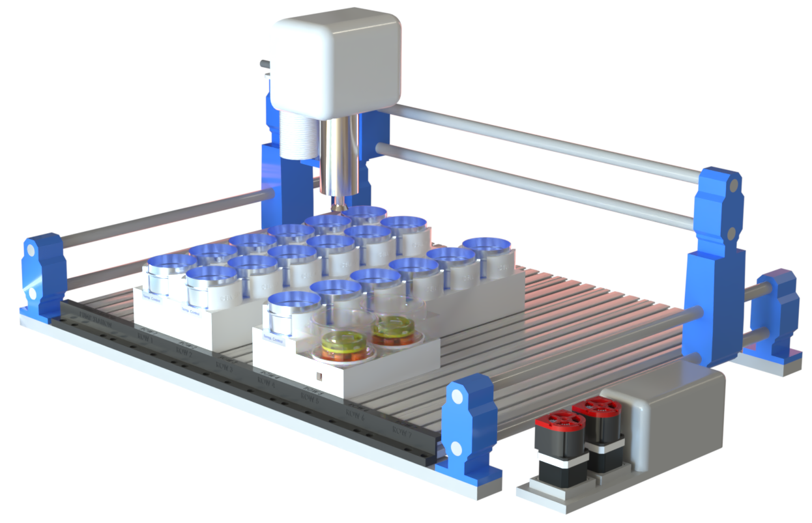
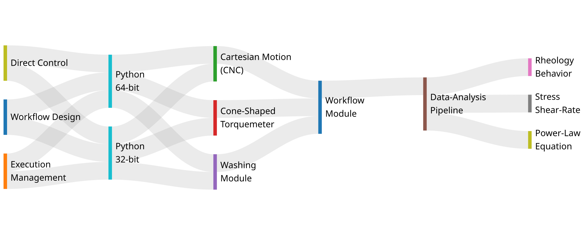

Multi-Layer Orchestration Architecture

Rheology Behavior Model

Project Summary
The rheological characterization of viscous fluids is a recognized bottleneck in formulation science: manual cone-and-plate rheometry requires tens-of-micrometre gap-setting tolerances incompatible with robotic execution. We present an automated viscometry platform that reframes viscosity acquisition as a signal-interpretation problem rather than a geometric-precision one. A cone-shaped rotational torquemeter, Cartesian motion stage, and dual-stage washing module operate under an asynchronous multi-runtime control architecture; the spindle's descent generates torque-displacement signatures decoded by a physics-constrained pipeline calibrated once on Newtonian silicone oils, recovering viscosity at 3.4% mean absolute error with 95.7% of samples within ±10%.
The pipeline converts each descent into a calibrated stress–shear-rate curve and, at multiple rotation rates, the fitted power-law equation τ = Kγ̇n. Across six chemistries spanning five orders of magnitude in viscosity (1–125,000 cP), the platform reproduces reference rheology within ±2×, recovers the flow-behaviour index n from 1.00 (Newtonian) to 0.39 (yield-pseudoplastic), and processes 18 samples in ~5 hours autonomously using under 20 minutes (7%) of human time — a 4.7-fold reduction versus manual operation.
Both outputs come from one universal pipeline with no per-chemistry retuning, evidence that an information-rich workflow can substitute for the precision hardware of manual rheometry. The platform is positioned as the measurement layer for closed-loop rheology-discovery campaigns, where Bayesian optimization and active learning propose formulations that it characterizes autonomously.